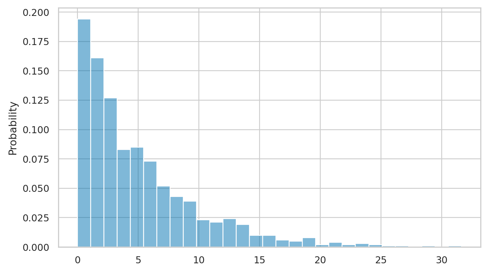
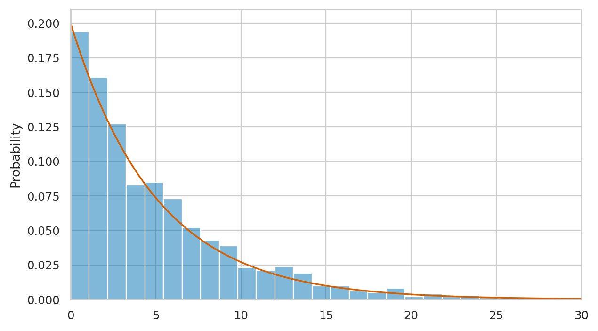
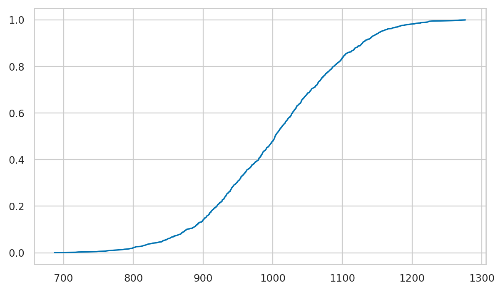
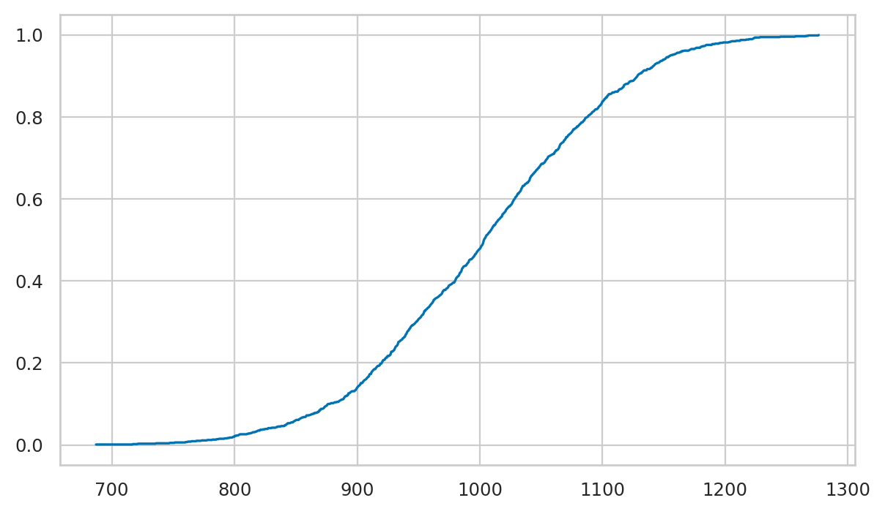
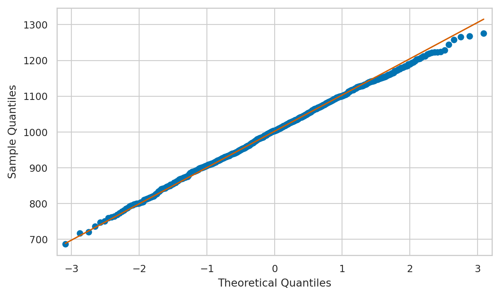
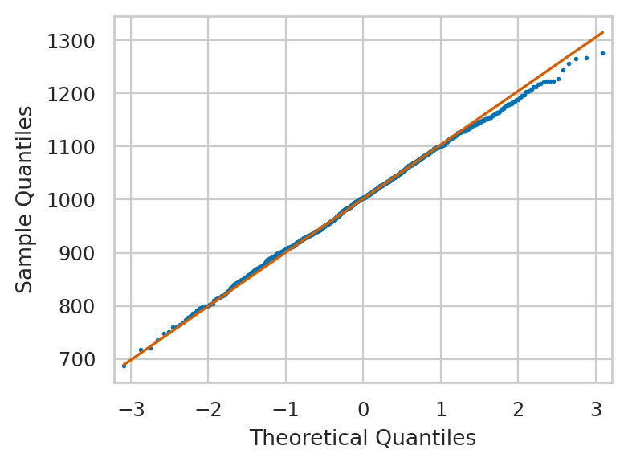
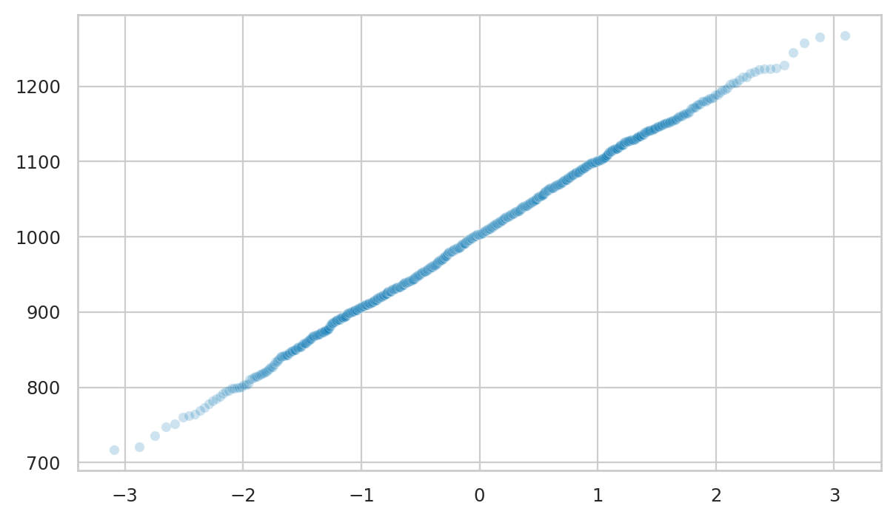
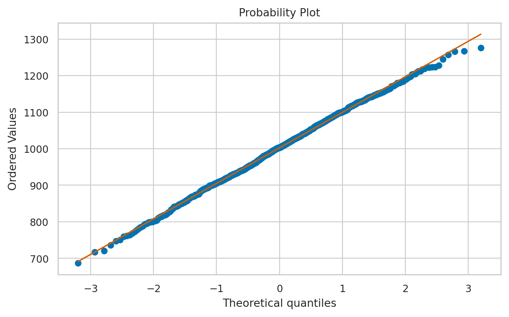

Section 2.7 — Random variable generation
Contents
Section 2.7 — Random variable generation#
This notebook contains the code examples from Section 2.7 Random variable generation of the No Bullshit Guide to Statistics.
Notebook setup#
# load Python modules
import numpy as np
import pandas as pd
import random
import seaborn as sns
import matplotlib.pyplot as plt
# Figures setup
sns.set_theme(
context="paper",
style="whitegrid",
palette="colorblind",
rc={'figure.figsize': (7,4)},
)
%config InlineBackend.figure_format = 'retina'
# # silence annoying warnings
# import warnings; warnings.filterwarnings('ignore')
# set random seed for repeatability
random.seed(42)
np.random.seed(42)
Synthetic data generation using simulation#
import random
random.random()
0.6394267984578837
import numpy as np
np.random.rand(8)
array([0.37454012, 0.95071431, 0.73199394, 0.59865848, 0.15601864,
0.15599452, 0.05808361, 0.86617615])
Discrete random variable generation#
def toss_coin(p=0.5):
r = random.random()
if r < p:
return "heads"
else:
return "tails"
toss_coin(p=0.3)
'heads'
n = 1000
nflips = [toss_coin(p=0.3) for i in range(0,n)]
nflips.count("heads") / n
0.295
Continuous random variable generation (optional)#
Example: generating from the exponential distribution#
fig, ax = plt.subplots()
# manual random number generation
np.random.seed(6)
us = np.random.rand(1000)
lam = 0.2
es = -1 * np.log(1-us) / lam
sns.histplot(es, stat="probability", ax=ax, alpha=0.5)
<AxesSubplot: ylabel='Probability'>

# theoretical probability density function
from scipy.stats import expon
rvE = expon(0,1/lam)
xs = np.linspace(0,35,1000)
fEs = rvE.pdf(xs)
sns.lineplot(x=xs, y=fEs, ax=ax, color="r")
ax.set_xlim([0,30])
fig

# filename = "figures/prob/generate_exp_and_pdf_rvE.pdf"
# basename = filename.replace('.pdf','').replace('.png','')
# with plt.rc_context({"figure.figsize":(4,2)}):
# fig, ax = plt.subplots()
# sns.histplot(es, stat="probability", ax=ax, alpha=0.5)
# sns.lineplot(x=xs, y=fEs, ax=ax, color="r")
# ax.set_xlim([0,30])
# fig.tight_layout()
# fig.savefig(basename + '.pdf', dpi=300, bbox_inches="tight", pad_inches=0.02)
# fig.savefig(basename + '.png', dpi=300, bbox_inches="tight", pad_inches=0.02)
Empirical distributions#
Let’s generate some random variable observations, in order to be able to discuss.
from scipy.stats import norm
rvN = norm(1000,100)
ndata = rvN.rvs(1000)
def ecdf(data):
"""
Compute ECDF for on list of data observations.
"""
n = len(data)
xs = np.sort(data)
ys = np.arange(1, n+1) / n
return xs, ys
x1, y1 = ecdf(ndata)
sns.lineplot(x=x1, y=y1)
<AxesSubplot: >

import statsmodels.api as sm
ecdf2 = sm.distributions.ECDF(ndata)
x2 = np.linspace(min(ndata),max(ndata),1000)
y2 = ecdf2(x2)
sns.lineplot(x=x2, y=y2)
<AxesSubplot: >

Measuring model-data fit#
Graphical methods#
from statsmodels.graphics.api import qqplot
fig = qqplot(ndata, dist=norm(0,1), line='q')

filename = "figures/prob/qqplot_ndata_vs_stdnorm.pdf"
basename = filename.replace('.pdf','').replace('.png','')
with plt.rc_context({"figure.figsize":(4,3)}):
fig = qqplot(ndata, dist=norm(0,1), line='q', markersize=1)
fig.tight_layout()
fig.savefig(basename + '.pdf', dpi=300, bbox_inches="tight", pad_inches=0.02)
fig.savefig(basename + '.png', dpi=300, bbox_inches="tight", pad_inches=0.02)

def qq_plot(data, model):
"""
Prepares the values for a Q-Q plot.
"""
ps = np.linspace(0, 1, 1000)
q1 = model.ppf(ps)
q2 = np.quantile(data, ps)
ax = sns.scatterplot(x=q1, y=q2, alpha=0.2)
return ax
qq_plot(ndata, norm(0,1))
# # ALT.
# plt.plot(q1, q2, ls="", marker="o")
# x = np.linspace(0,1) #np.min(data), np.max(data))
# plt.plot(x, x, color="k", ls="--")
# plt.show()
<AxesSubplot: >

from scipy.stats import probplot
# _ = probplot(data, dist=rvN, plot=plt)
_ = probplot(ndata, dist=norm, plot=plt)

Compare moments#
Kolmogorov–Smirnov test#
def standardize(data):
xbar = ndata.mean()
s = ndata.std(ddof=1)
return (data-xbar)/s
from scipy.stats import kstest
result = kstest(ndata, norm(1000,100).cdf, mode="exact")
result.statistic, result.pvalue
(0.02253916591963606, 0.68119682096187)
result = kstest(standardize(ndata), norm(0,1).cdf, mode="exact")
result.statistic, result.pvalue
(0.01590339748135189, 0.9585606795507393)
from scipy.stats import norm
from scipy.stats import kstwo
def eCDF(data, b):
data.sort() # sort the data
count = sum(data <= b) # counts # obs. <= b
return count / len(data) # proportion of total
def ks_norm(sample, dist=norm(0,1)):
# Sorts the sample
sample.sort()
# Evaluates the KS statistic
D_ks = [] # KS Statistic list
for x in sample:
cdf_normal = dist.cdf(x)
eCDF_sample = eCDF(sample, b = x)
D_k = abs(cdf_normal - eCDF_sample)
D_ks.append(D_k)
ks_stat = max(D_ks)
# Calculates the P-Value based on the two-sided test
# The P-Value comes from the KS Distribution Survival Function (SF = 1-CDF)
p_value = kstwo.sf(ks_stat, len(sample))
return {"ks_stat": ks_stat, "p_value" : p_value}
ks_norm(ndata, dist=norm(1000,100))
{'ks_stat': 0.02153916591963606, 'p_value': 0.733883624144605}
ks_norm(standardize(ndata), dist=norm(0,1))
{'ks_stat': 0.015903397481352333, 'p_value': 0.9585606795507295}
from statsmodels.stats.diagnostic import kstest_normal
kstest_normal(ndata, pvalmethod="approx")
(0.015903397481352333, 0.8390042586735309)